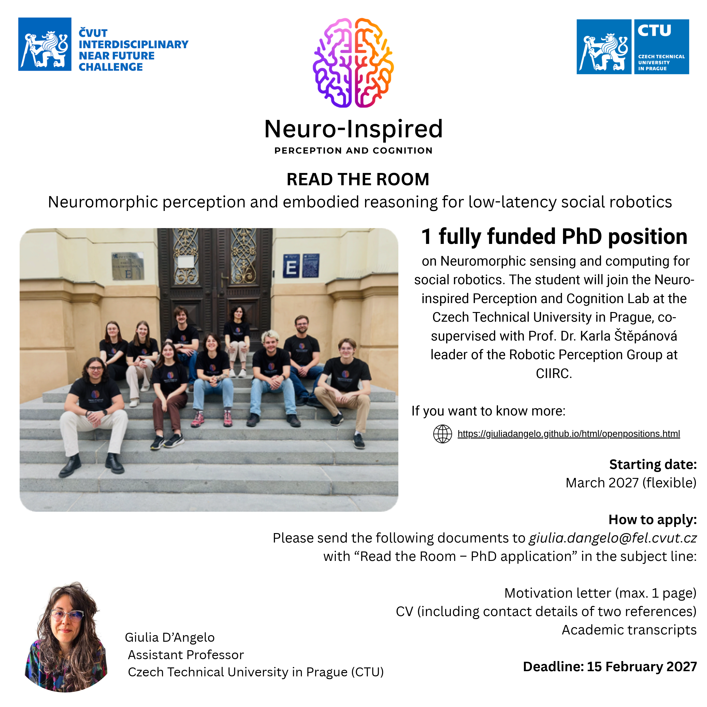

We invite applications for 1 fully funded PhD position on event-based, neuromorphic perception of human social behaviour. The student will join the Neuro-inspired Perception and Cognition (NPC) Lab at the Czech Technical University in Prague (Faculty of Electrical Engineering), under the joint supervision of Assistant Prof. Giulia D'Angelo and Prof. Karla Štěpánová, who leads the Robotic Perception Group at CIIRC.
Read the Room is funded by the ČVUT Interdisciplinary Near Future Challenge (INFC). Robots can now walk among us, but not yet read us. The project teaches a humanoid robot to judge, in real time, whether and when it is welcome to join a human group. It does this by fusing millisecond-latency, milliwatt-power neuromorphic vision with gesture- and language-grounded reasoning.
The PhD student will lead the sensing part of the project. This means extending event-based pose and gesture recognition with Spiking Neural Networks (SNNs) from a single person to multiple people in a social scene, and deploying it on neuromorphic hardware. The student will also help record the new ReadTheRoom dataset and integrate the full pipeline on a Unitree humanoid robot at CIIRC.
March 2027 (flexible).
The standard PhD duration is 4 years.
Please send the following documents to giulia.dangelo@fel.cvut.cz with "Read the Room - PhD application" in the subject line:
Deadline: February 15, 2027.
Giulia D'Angelo
Assistant Professor
Czech Technical University in Prague (CTU)